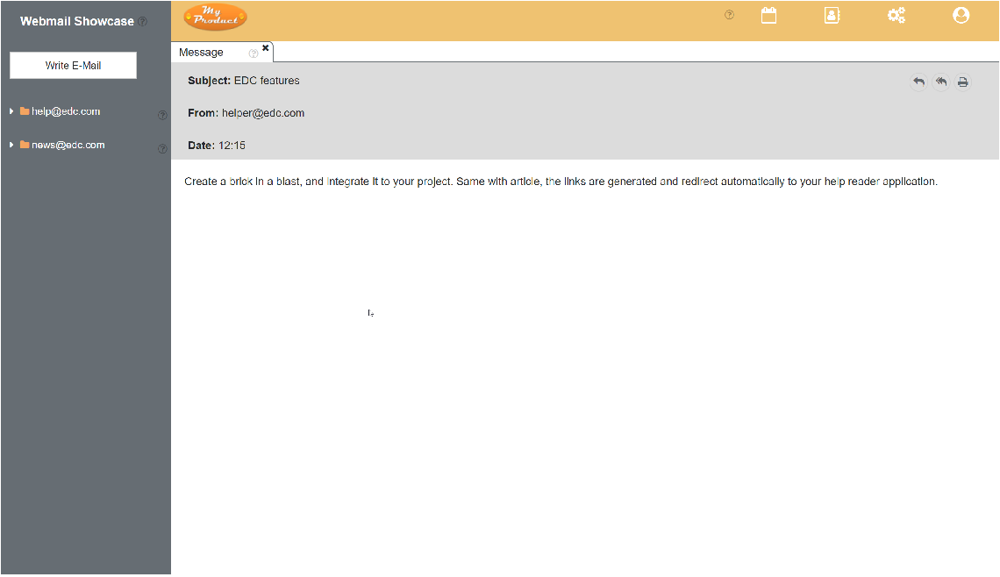

There are three ways to read your email:
- in the email client
- in a browser
- on paper.
For a guilt-free email experience, we recommend the first two methods.

To read an email in the editor:
- Click the email to open the Message panel.
- Open eyes.
- Apply eyes to screen.
Note: if eyes are missing or otherwise deficient, you can substitute screen reading software.
- Read the email.
- Go to print.
- Feel guilty about polar bears.
- Cancel printing.
To read an email in a browser:
- Open a browser.
We recommend Google Chrome.
- Go to https://mail.totallyrealdomain.com/.
- Click the email to open the Message panel.
- Open eyes.
- Apply eyes to screen.
Note: if eyes are missing or otherwise deficient, you can substitute screen reading software.
- Read the email.
- Go to print.
- Feel guilty about polar bears.
- Cancel printing.
Please don't. For the bears.